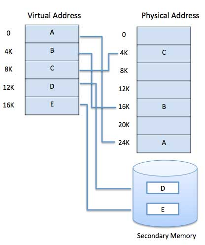

Operating System - Virtual Memory
links
A computer can address more memory than the amount physically installed on the system.
This extra memory is actually called virtual memory and it is a section of a hard disk that's set up to emulate the computer's RAM.
The main visible advantage of this scheme is that programs can be larger than physical memory.
Virtual memory serves two purposes. First, it allows us to extend the use of physical memory by using disk. Second,
it allows us to have memory protection, because each virtual address is translated to a physical address.
Following are the situations, when entire program is not required to be loaded fully in main memory.
User written error handling routines are used only when an error occurred in the data or computation.
Certain options and features of a program may be used rarely.
Many tables are assigned a fixed amount of address space even though only a small amount of the table is actually used.
The ability to execute a program that is only partially in memory would counter many benefits.
Less number of I/O would be needed to load or swap each user program into memory.
A program would no longer be constrained by the amount of physical memory that is available.
Each user program could take less physical memory, more programs could be run the same time,
with a corresponding increase in CPU utilization and throughput.
Modern microprocessors intended for general-purpose use, a memory management unit, or MMU,
is built into the hardware. The MMU's job is to translate virtual addresses into physical addresses. A basic example is given below −

Demand Paging
A demand paging system is quite similar to a paging system with swapping where processes reside in secondary memory and pages are loaded only on demand, not in advance.
When a context switch occurs, the operating system does not copy any of the old program’s pages out to the disk or any of the new program’s pages into the main memory Instead,
it just begins executing the new program after loading the first page and fetches that program’s pages as they are referenced.